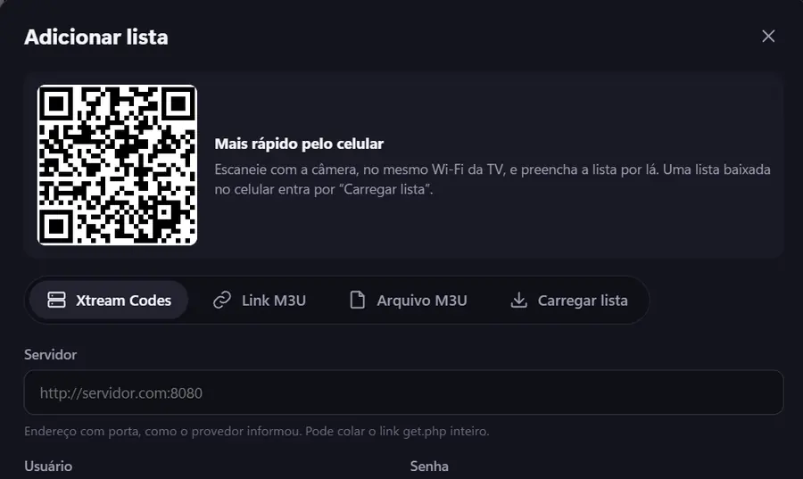
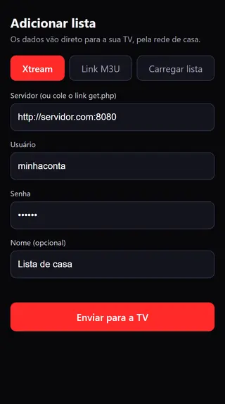

O fim do tecla por tecla
Aponte o celular. A lista cai na TV.
Digitar um link de lista no controle dá cerca de 445 cliques. Aqui, a TV mostra um QR Code, você preenche no celular e toca em enviar. Vai direto para a TV, pela sua rede, sem passar por servidor nenhum.
Nos apps de LG e Android TV, com o celular no mesmo Wi-Fi. O código vale 15 minutos e só uma vez. Cliques estimados em um teclado QWERTY de TV.

